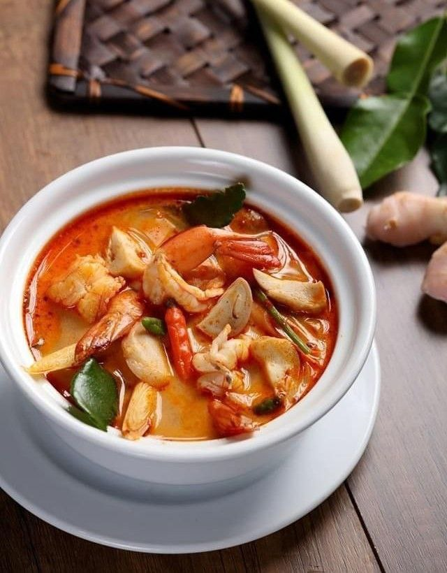
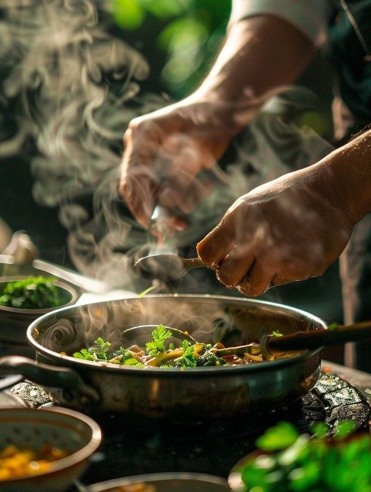

Why Choose Us?
Our Vision
To be the go-to Thai food stall in Singapore, known for our rich flavors, excellent service, and unbeatable value. We aim to expand our reach, introduce more people to the beauty of Thai cuisine, and become a staple in every food lover’s journey. By staying true to tradition while embracing innovation, we envision a future where every meal at Thai Cuisine is a delightful and memorable experience.
Customer Reviews
"I love how they balance flavors so well—spicy, sour, and savory in every bite! a Highly recommended!" ⭐⭐⭐⭐
"Tried this stall during lunch break, and it was the perfect choice. Quick service, friendly staff, and the food was absolutely delicious. The Tom Yum fried rice had the perfect kick!" ⭐⭐⭐⭐⭐
"Where else can you get such good Thai food for just $5? The chicken wings were crispy perfection, and the rice was so fragrant. Great value for money!" ⭐⭐⭐⭐
Opening Hours: Mon-Fri (7:30am - 6:30pm)
Phone : 9388 2036
Email:nypkoufuthaicuisine@email.com
Follow Us